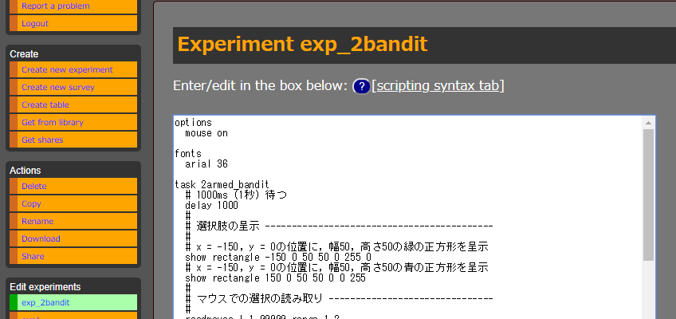

[ 基本プログラム| 拡張1 | 拡張2 | 拡張3 | 拡張4]
(18’/9/30 更新)
手軽にオンライン実験・調査環境を構築できるPsyToolkitを使って，簡単な2腕バンディット課題を作る方法を記します。より実用的な課題の作り方はこの拡張として他のページ (リンクはこちら) で記します。ここではPsyToolkit自体の詳細な解説は行いません。 PsyToolkitの構文については，https://www.psytoolkit.org/doc2.5.1/syntax.htmlを参照してください。 なお，PsyToolkitはバージョン2.5.1を想定しています。
ここでは上のように緑と青の四角形が選択肢として呈示され，マウスなどによりいずれかをクリックして選択すると，選択に応じた確率で報酬としてポイントが出る，という課題を作ります。以下を順に実行すると，このような基本的な課題ができ，ブラウザ上から外部の人が実験に参加できるようになります。
※Rのコードとして無理やり表示しているので，構文の色付けがおかしいところがあります (例えば’if’は青色になっているがそれを閉じる’fi’は黒色)。ご了承ください。
options
mouse on # マウス入力をオンに
fonts
arial 36 # 使用するテキストのフォントを設定
# 2armed_banditというtaskの1試行の流れを以下に記述
task 2armed_bandit
#
# 選択肢の呈示 -------------------------------------------
#
# 座標x = -150, y = 0の位置に，幅50，高さ50の緑の正方形を呈示 (正方形の中心がこの座標になる)
show rectangle -150 0 50 50 0 255 0 # ⇒ stimulus 1
# 座標x = -150, y = 0の位置に，幅50，高さ50の青の正方形を呈示
show rectangle 150 0 50 50 0 0 255 # ⇒ stimulus 2
#
# マウスでの選択の読み取り -------------------------------
# 999999 ms (実質的に時間は無制限)まで，
# stimulus 1 (緑の正方形)，またはstimulus 2 (青の正方形)
# が左クリックされるまで待つ
readmouse l 1 999999 range 1 2
# $a にはクリックされたstimulusのID (1 or 2) が入る
set $a bitmap-under-mouse MOUSE_X MOUSE_Y
#
# 反応時間の記録
set $decisiontime RT
#
# 選択の結果の決定，呈示 ---------------------------------
#
# 報酬の有無の決定のため，1から100の間の乱数を生成
set $x random 0 100
if $a == 1 # 選択肢1 (緑) を選択
show text "▲" -150 60
delay 500
if $x < 70 # 0.7の確率で報酬有り
show text "+10ポイント" 0 -100
set $reward 1
fi
if $x >= 70 # 0.3の確率で報酬無し
show text "+0ポイント" 0 -100
set $reward 0
fi
fi
if $a == 2 # 選択肢2 (青) を選択
show text "▲" 150 60
delay 500
if $x < 30 # 0.3の確率で報酬有り
show text "+10ポイント" 0 -100
set $reward 1
fi
if $x >= 30 # 0.7の確率で報酬無し
show text "+0ポイント" 0 -100
set $reward 0
fi
fi
# 結果が出た状態で1000ms (1秒) 待つ
delay 1000
#
# 1試行分のデータの保存-----------------------------------
# 1列目: 反応時間 (選択肢が出てからキーを押すまで)
# 2列目: 選択 (1 or 2)
# 3列目: 報酬の有無 (0 or 1)
save $decisiontime $a $reward
block main
tasklist
# タスク2armed_banditを20試行行う
2armed_bandit 20
end下の画面はコードをペーストして入力したところです。 
’Save’をクリックします。
’Compile’をクリックします。
’survey_2bandit’というsurveyを作ります。これも名前は何でも構いません。
以下をコードのボックスにペーストします。
# 参加者の基本情報 ------------------------------------------
l: sex
t: radio
q: あなたの性別を選択してください。
- 男
- 女
# 2腕バンディット --------------------------------------------
l: 2armed_bandit
t: experiment
q: 下に出てくる赤い画面をクリックすると課題が始まります。マウスで2つの選択肢のうちいずれかをクリックし，できるだけ多くのポイントを稼いでください。
- exp_2armed_bandit最後の行の’exp_2armed_bandit’は上で実際に作ったexperimentの名前にする必要があります。
‘Survey status’で，’Should this survey be online accessible (check, even if you just want to test it)?’ にチェックを入れる。
’Study is being designed’を選択します。
’Change survey status’をクリックします。
‘Link to survey (you can copy this and send to other people):’ に表示されるURLにアクセスすると，調査が開始されます。
作成したsurveyのページの， ’Prepare and download participant data’で ’Prepare datafiles for download’をクリック。
’Download data in zip file’ボタンができたらクリックするとzipファイルがダウンロードされます。